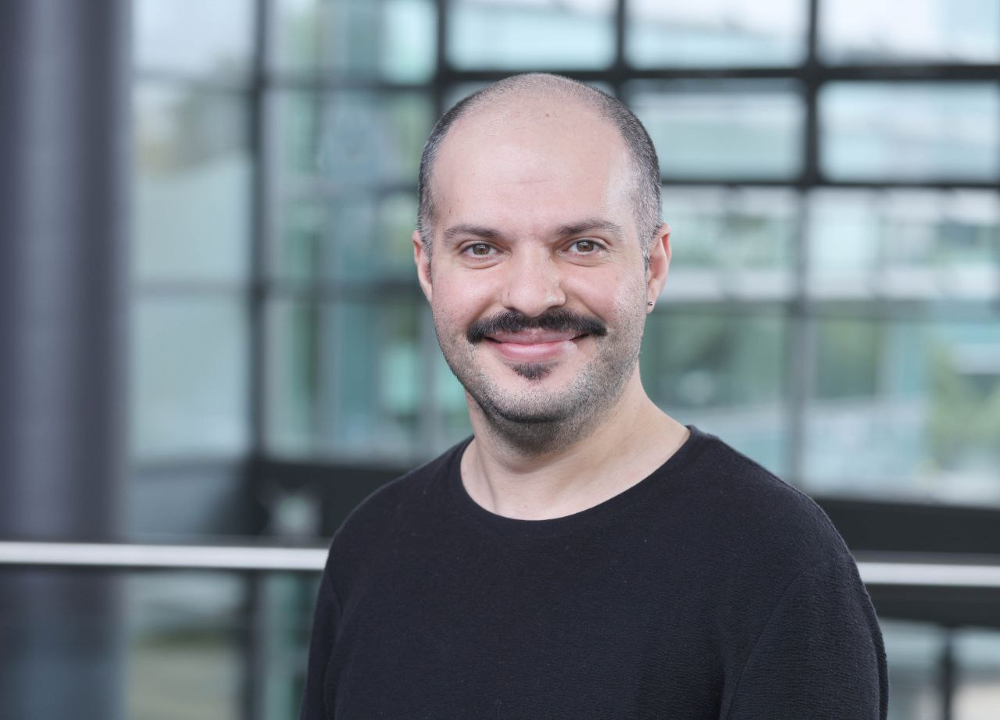

2026
Postdoctoral Researcher
I study how quantum computers lose information, and how to protect it.
Quantum error correction at the Centre for Quantum Software and Information (QSI), University of Technology Sydney — in the group of A/Prof. Simon Devitt.
My work follows a single thread: noise. During my PhD at UNSW I asked how real devices lose their quantum information — how charge noise dephases hole spin qubits, and how spin-3/2 holes respond nonlinearly when driven out of equilibrium. Now I work a level up, on the error-correction and architecture layer that turns noisy physical qubits into logical ones you can actually compute with.

What I work on
From the physics of a single qubit to the architecture of a fault-tolerant machine.
Quantum error correction
Codes, decoders and compilation strategies that keep logical information alive long enough to be useful.
Fault-tolerant architecture
How resource estimates, layout and scheduling shape what a real machine can run — and at what cost.
Spin-qubit decoherence
1/f charge noise and its anisotropic signature in the dephasing time of planar Ge hole spin qubits.
Nonlinear hole transport
Nonlinear and nonequilibrium response of spin-3/2 heavy holes in low-dimensional semiconductors.
Selected publications
Recent work
2025
2023
2018
Full list and citation metrics on Google Scholar.
Background
The path here
-
2026 — presentPostdoctoral researcher, quantum error correctionCentre for Quantum Software and Information (QSI), University of Technology Sydney
-
2020 — 2025PhD in PhysicsUNSW Sydney — spin-qubit decoherence and nonlinear transport in 2D hole systems, with Prof. Dimitrie Culcer
-
2014 — 2017MSc in PhysicsBilkent University, Ankara — topological models and the magnetic translation group, with Prof. Balázs Hetényi
-
2008 — 2013BSc in Theoretical Physics & AstrophysicsUniversity of Tabriz